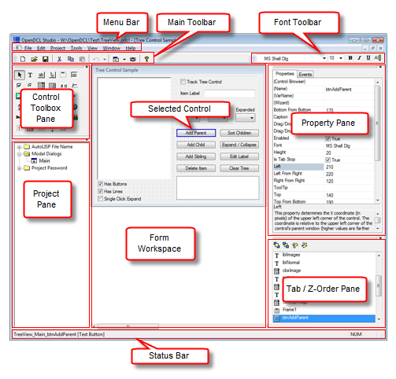

OpenDCL Studio is used to create and edit OpenDCL projects. A single project may contain multiple forms and pictures. Projects are saved in files with the file extension .odcl. The following diagram identifies the main areas of the OpenDCL Studio project editor.

New forms are added to a project by right-clicking in the project pane or by clicking the new form dropdown toolbar button in the main toolbar. Double clicking a form in the project pane opens it in the form workspace for editing. Note that the Window menu can be used to cascade or tile multiple forms for simultaneous viewing.
Controls can be added to a form by selecting the control type from the control toolbox, then dragging a rectangle on the form in the form workspace. A control's size and position can be change by dragging the control or its edges. A control's default text font can be modified using the font toolbar while the control is selected. Other control properties can be modified in the property pane, or by right-clicking on a control and selecting Properties.
The Tab / Z-Order pane shows the current form's tab order. Control names can be selected and dragged to a new position to change the tab order. Overlapping controls are discouraged, but the Tab / Z-Order can also be used to force one control to appear "below" another (however note that the editor may have trouble displaying overlapping controls correctly).